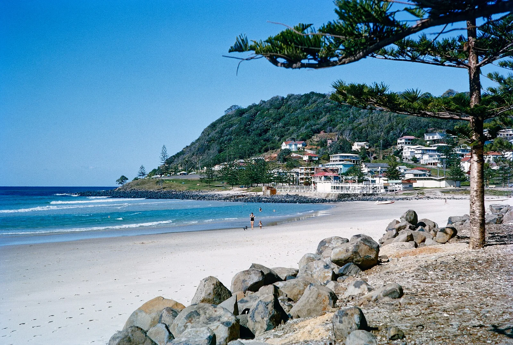

Burleigh Heads
Gold Coast, Australie · surf, bodyboard

Une droite de pointe qui s’enroule au pied d’un promontoire boisé, en plein cœur de la Gold Coast. Vague rapide et très disputée.
- Lieu
- Gold Coast, Australie
- Niveau
- Expert
- Activités
- surf, bodyboard
- Type d'eau
- Mer / océan
- Coordonnées
- -28.09, 153.45 (position approximative du secteur)
Dangers à connaître
- Un des pics les plus compétitifs d’Australie.
- Rochers à l’entrée en haut de la pointe.
- Courant fort qui remonte le long du promontoire.
Le conseil d'Ocean Buddy
Entre par les rochers du haut de la pointe et attends ton tour : ici la priorité se respecte.
Ouvrir dans Ocean Buddy Télécharger sur l'App Store
Source : Description historique Ocean Buddy · vérification externe en attente.